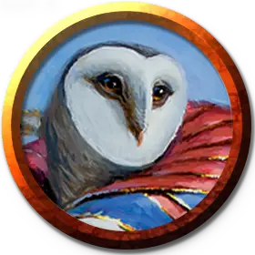

Профессор совершенства Призмари
Prismari Professor of Perfection
Маленький или Средний Гуманоид (Чародей), любое мировоззрение

Класс Доспеха 13 (16 с доспехами мага)
Хиты 97 (15к8 + 30)
Скорость 30 футов
| мод | спас | ||
|---|---|---|---|
| СИЛ | 14 | +2 | +2 |
| ЛОВ | 16 | +3 | +6 |
| ТЕЛ | 15 | +2 | +2 |
| мод | спас | ||
|---|---|---|---|
| ИНТ | 15 | +2 | +5 |
| МДР | 13 | +1 | +4 |
| ХАР | 19 | +4 | +7 |
Навыки Акробатика +6, Атлетика +5, Восприятие +4, Выступление +10, Магия +5
Сопротивление урону холод
Чувства пассивное Восприятие 14
Языки Общий, и ещё четыре любых языка
Опасность 7 (2900 опыта)
Бонус мастерства +3
Особенности
Хождение по воде. Профессор может ходить по воде и другим жидкостям, как по твердой земле.
Действия
Мультиатака. Профессор совершает три атаки Приливный ударом.
Приливный удар. Рукопашная или дальнобойная атака заклинанием: +7 к попаданию, досягаемость 5 футов или 60 футов, одна цель. Попадание: 13 (2к8 + 4) урона холодом.
Использование заклинаний. Профессор накладывает одно из следующих заклинаний, используя Харизму в качестве базовой характеристики (Сл спасброска от заклинаний 15):
• Неограниченно: малая иллюзия [minor illusion];
• 2/день каждое: власть над водами [control water], сотворение или уничтожение воды [create or destroy water], доспехи мага [mage armor], изменение формы камня [stone shape];
• 1/день каждое: ледяная стена [wall of ice].
Бонусные действия
Стремительная волна. Профессор на мгновение окружается бурлящими водяными волнами и перемещается на расстояние до 30 футов. Когда профессор перемещается в пределах 5 футов от любого другого существа во время этого бонусного действия, это существо должно преуспеть в спасброске Силы Сл 15, иначе существо падает ничком и не может совершать реакции до начала своего следующего хода. Существо может испытать этот эффект только один раз за ход.
Описание
Профессора совершенства сочетают магию стихий с точными, решительными физическими движениями. Их размашистые жесты и танцевальные шаги собирают силу разбивающихся волн, создают защиту из неподатливого камня и формируют огромные ледяные сооружения. Связывание и направление этих природных стихий позволяет профессорам формировать свое окружение в соответствии со своими потребностями, как для захватывающих дух выступлений, так и для контроля условий поля боя против своих врагов.
Эти преподаватели уделяют особое внимание мелким деталям, акцентируя внимание своих учеников на самых незначительных моментах. Идеальная основа в конечном счете приводит к безупречному произведению искусства, а профессора совершенства создают скульптурные и архитектурные чудеса.
Учёные призмари
Ученые факультета Призмари считают, что искусство - это самая настоящая форма магии. Они используют магию, чтобы создавать великолепные произведения искусства, и они используют артистизм, чтобы сделать свою магию впечатляющей.